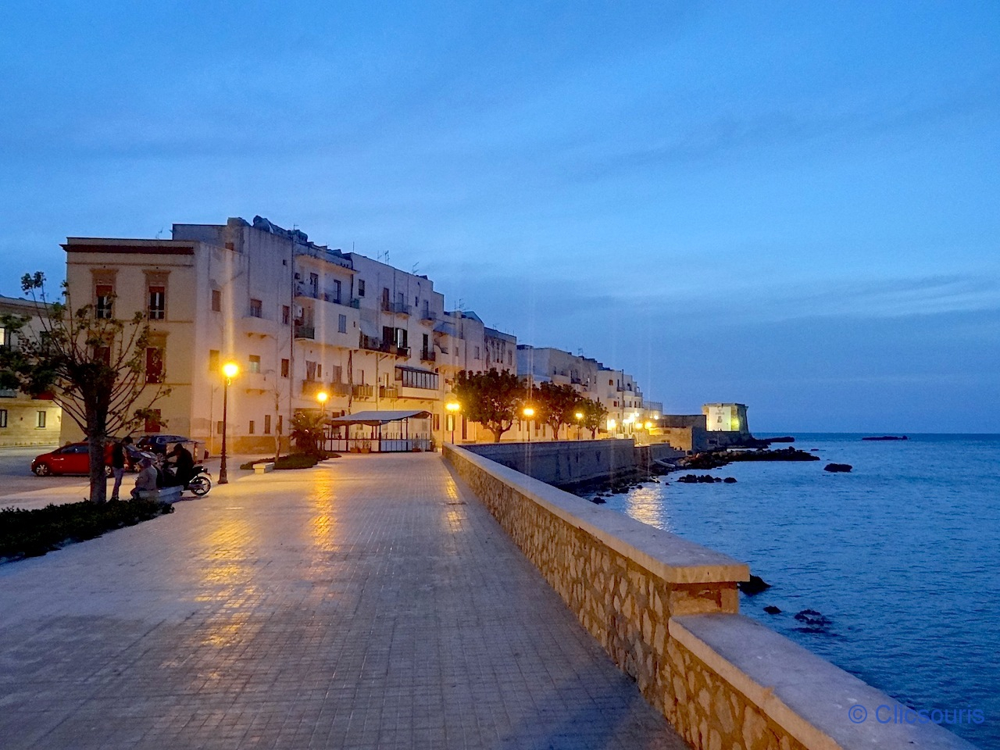
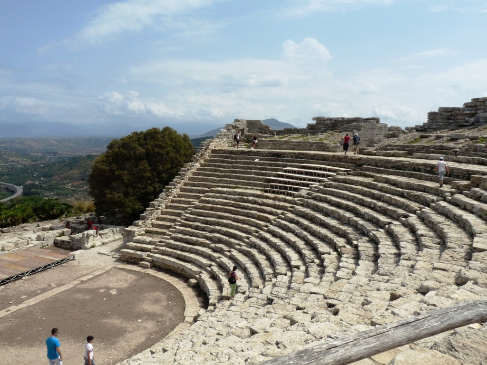

Découvrir les salines de Trapani 🌅
Balade romantique au coucher du soleil, entre marais salants et moulins à vent typiques.

Les salines au coucher du soleil
Profitez du sable chaud et des eaux cristallines pour vous détendre sous le soleil sicilien.
Un site historique impressionnant perché sur une colline, avec une vue imprenable sur la campagne.
Balade romantique au coucher du soleil, entre marais salants et moulins à vent typiques.
Sentiers en bord de mer, criques secrètes et vues imprenables sur la Méditerranée.

Partez en mer et découvrez une île aux plages paradisiaques et à l’eau turquoise.